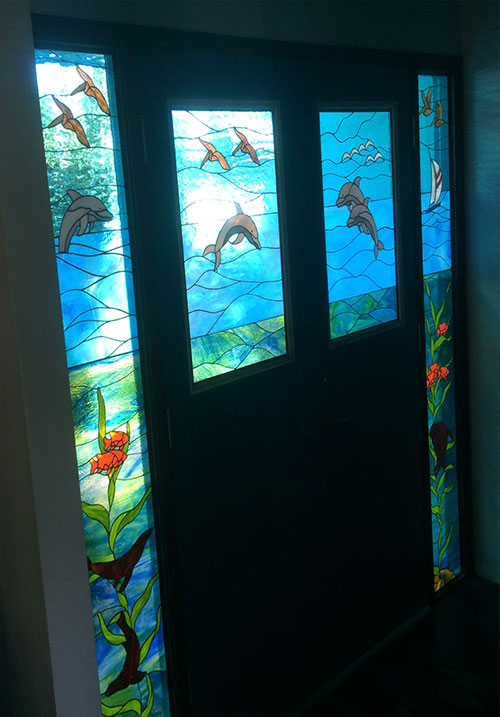
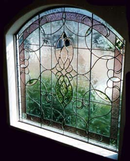
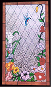
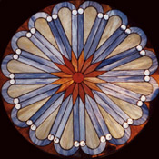

Custom Stained Glass Design
Stained glass windows, entry doors, sidelites, lamps, and cabinet panels — handcrafted using traditional lead came and copper foil techniques. Free estimates available.
Learn More →Custom stained glass windows, doors & panels. Hands-on classes in copper foil, lead came, mosaics & fused glass. Expert repairs and art glass supplies — serving the South Bay & Greater Los Angeles for over 47 years.


From one-of-a-kind custom commissions to hands-on workshops, we bring the beauty of stained glass to life.
Stained glass windows, entry doors, sidelites, lamps, and cabinet panels — handcrafted using traditional lead came and copper foil techniques. Free estimates available.
Learn More →
Beginner to advanced classes in copper foil, lead came, mosaics, glass fusing, and slumping. Open workshops and private instruction available. Classes from just $15.
View Schedule →Authorized distributor of Oceanside, Bullseye, and Wissmach art glass. Copper foil, lead came, fusible glass, dichroic glass, tools, grinders, soldering supplies, and more. Special orders welcome.
Browse Supplies →

Allen Kenoyer Glass was founded in 1978 in Manhattan Beach and has called Lawndale, California home since 1987. What began as a passion for stained glass artistry has grown into the South Bay's premier art glass studio — offering custom design, expert stained glass repair and restoration, hands-on classes, and a fully stocked retail supply shop.
Led by manager Kristin Karlin and creative designer Cyndee Hoffman, our team brings decades of experience in lead came, copper foil, glass fusing, mosaics, and beveling. Whether you're a first-time student, a seasoned artisan, or a homeowner dreaming of a custom stained glass window — we're here to bring your vision to life.
From traditional florals to whimsical designs — every piece is crafted with care and love.





With a 5.0-star rating across 70+ reviews, our customers love their experience at Allen Kenoyer Glass.
“Excellent teaching on techniques. Very detailed and personalized instruction. Very supportive and encouraging. I highly recommend taking a class.”
— June Deliberto
“Allen Kenoyer Stained Glass Shop has the best selection of glass and supplies. Everyone there is so very helpful.”
— ES Reynolds
“Did wonderful work on stained glass window repairs and finished them in the time quoted.”
— Satisfied Customer
“Instructors are knowledgeable, patient, and very helpful. I would recommend anyone interested in working with glass to check this shop out!”
— Donna Barrett
“Best place for custom windows, or classes, perfect your art at AKGlass.”
— Stacie O'Connor
“Had custom pieces made just the way I wanted at affordable prices.”
— Satisfied Customer
4571 Artesia Boulevard
Lawndale, California 90260
Enter from rear parking lot